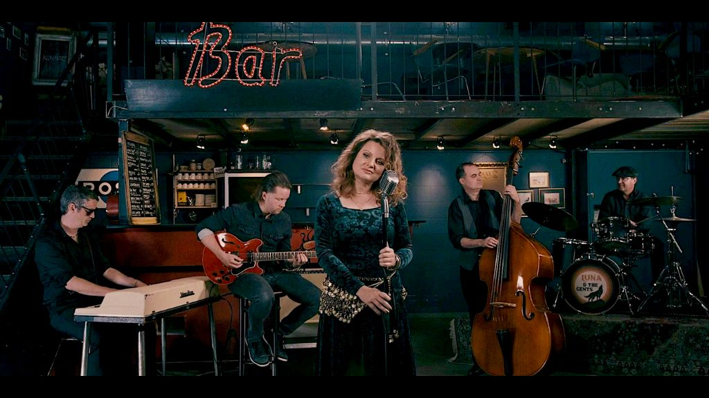

LUNA and The Gents Step Into a Stylish Loop With SECOND LIFE (PART I)

LUNA and The Gents start 2026 off right by embracing their own universe fully. SECOND LIFE (PART I) doesn’t feel so much like an EP from a new band as it does a calling card, a collection of five familiar singles by a band with a sense of purpose, and an extended version of Je Ne Peux Pas T’Oublier that gives the project an emotional core. The band, from Basel but functioning as a virtual band, plays with the concept of time itself, blending swing, chanson, and old pop styles and updating them for a modern day.
The songs blend from carefree grooves to quieter moments of reflection. There’s humor here, but it’s never wasted on a throwaway moment. A wink and a sweet moment are often side by side, and it’s this contrast that makes the music so appealing. Evelyne Pequignot’s vocals have a warmth and a sense of conversation, supported by guitars, keyboards, bass, and drums that focus on feel over showmanship. The production is clean and lets the music breathe, like an old studio session rather than a current playlist.
What makes this EP stand out from others is the connection between the music and the videos that each song comes with. There’s a loose narrative thread through the videos, a series of vignettes that evoke old European cinema, the kind of Jacques Demy color and romance of old, or the playfulness of old Godard, but through a modern lens. Fans of Caro Emerald, Postmodern Jukebox, or even old Zooey Deschanel soundtracks will find a lot to love.
SECOND LIFE (PART I) sounds like it was made yesterday, but it doesn’t feel dated at all. It’s pop that trusts its own charms and has a sense of skill and melody to back it up, and it makes a compelling case for this being only the first chapter.
This dispatch was last updated on January 28, 2026